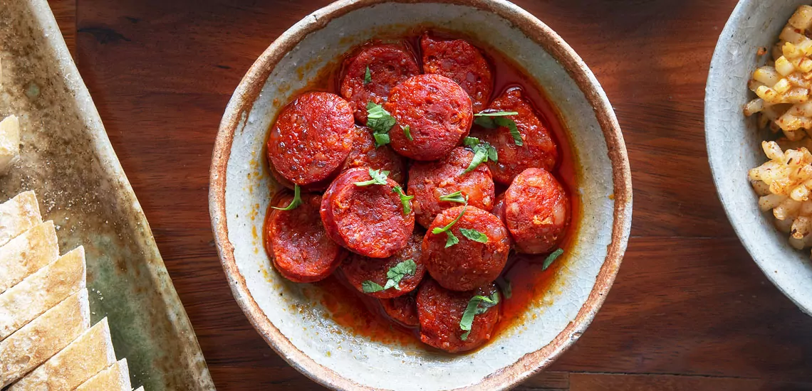

Spanish Chorizo

Description
Spanish chorizo stuffed chicken breast is a prime example of my successful attempts in making boneless
skinless chicken breast less boring—one foolproof thing is stuffing it with sausage.
Ingredients
- Ingredient 1: 2 tablespoons olive oil
- Ingredient 2:2 cloves garlic, crushed
- Ingredient 3:1 teaspoon chopped fresh oregano (optional)
- Ingredient 4:2 large boneless skinless chicken breasts (8 to 10 ounces each)
- Ingredient 5:2 ounces Spanish chorizo sausage, thinly sliced
- Ingredient 6:salt to taste
- Ingredient 7:2 tablespoons fine breadcrumbs
- Ingredient 8:2 tablespoons finely grated Parmigiano-Reggiano cheese
- Ingredient 9:2 tablespoons sherry vinegar
- Ingredient 10:1/3 cup sherry wine
- Ingredient 11:2 tablespoons cold butter, cubed
- Ingredient 12:freshly ground black pepper to taste
- Ingredient 13:1 tablespoon chopped Italian parsley (optional)
Steps
- Step 1: Mix olive oil, garlic, and oregano in a small bowl and setaside.
- Step 2: Preheat the oven to 475 degrees F (245 degrees C).
- Step 3: Use a sharp thin knife to make five deep slashes at a 45-degree angle into the chicken breast, about an inch apart,
going almost, but not quite all the way through. Leave about 1/2-inch of breast un-cut on either side of the slash.
- Step 4: Salt chicken breasts generously on both sides, and spoon oil mixture on top. Rub olive oil mixture into slashes,
and all over the surface and bottom of the breasts.
- Step 5: Slide slices of chorizo into the slashes in the chicken. Once inserted, at least 75% of the sausage slice should be
covered by chicken.
- Step 6: Transfer chicken to an oven safe skillet or pan, and pour over any extra oil. Dust breasts with breadcrumbs,
and sprinkle with cheese.
- Step 7: Roast in the preheated oven until chicken is cooked through, 20 to 25 minutes. An instant-read thermometer
inserted into the center should read 150 degrees F (65 degrees C).
Step 8:Remove chicken from pan, and let rest on plate, loosely covered with foil.
- Step 9: Add vinegar and sherry to the pan and turn the heat to medium high. Season with salt and pepper and bring to a boil,
stirring occasionally. Cook until sauce has reduced by half.
- Step 10: Add any accumulated juices from the plate of chicken to the pan. Reduce heat to lowest setting and stir in cold butter.
Step 11: Stir constantly until butter has disappeared.
Step 12: Turn off heat, and stir in the parsley. Taste for seasoning and adjust if necessary.
Step 13: Transfer chicken to plates and top with sauce.